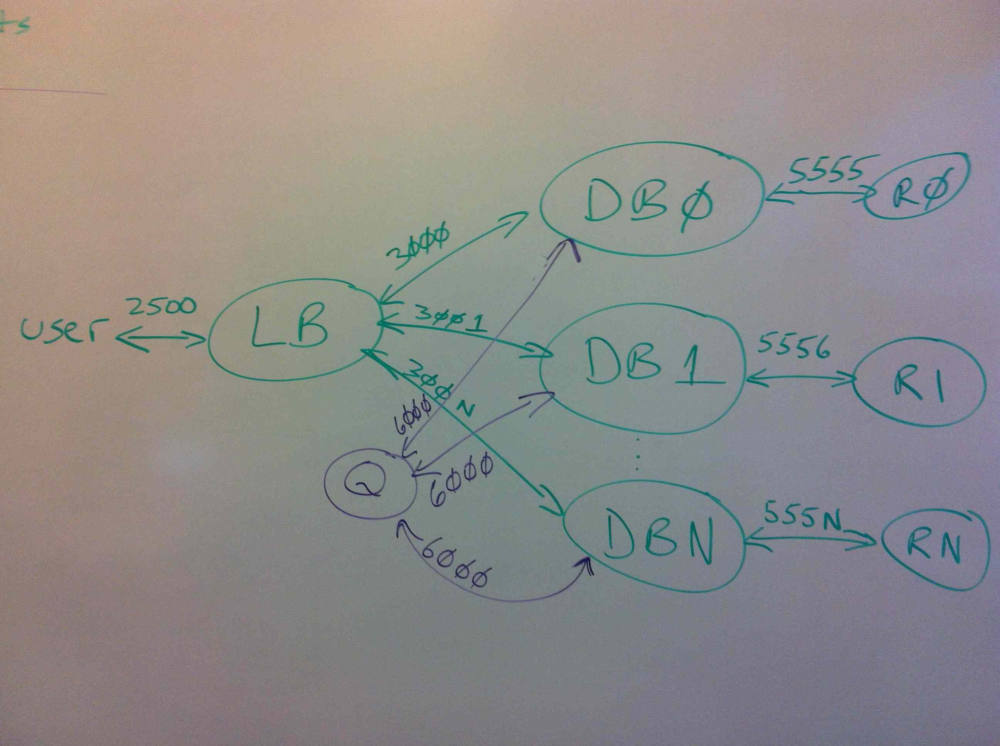

In this assignment, you will create a reliable, scalable data store. In the notation we use in this course, the store has N replications, W=1 (one replica written by synchronous write) and R=1 (one replica read by synchronous read). After the primary node has been synchronously written, the new value will be distributed to the replicas via a simple gossip algorithm.
By default, reads will be strongly consistent, but an optional parameter will allow the user to request an eventually consistent read. Eventually consistent reads will allow a faster implementation, although for the scales used in our test examples you’re not going to be able to measure the difference.
The code required to implement this is in fact fairly simple. The boilerplate we provide you will implement the communications protocols and the central queuing mechanism. The challenge for you will be to understand the architecture and faithfully implement it. We’ve spent the semester looking at architectural issues; building this system will give you a chance to think through these details on a system of your own.
This writeup is considerably longer than for the other assignments. This is partly because it is giving more details than the earlier assignments, partly because we’re specifying in this document things that were in code for previous assignments, and partly because the focus in this assignment is the architecture. Read the entire document before starting.
The system has four services, each accepting requests over a different TCP port:

The Load Balancer service (LB) accepts requests over port 2500. This service is implemented as
a single process for our assignment. You will implement the LB code. You can use your hash algorithm
from the first Tea-emporium assignment. This file must be named serverLB.py.
The Database service (DB) accepts requests over consecutive ports starting at 3000. There are N instances
of the DB process, running identical code but handling different shards of the key space. You will implement
the DB code. This file must be named serverDB.py.
The Queue service (Q) accepts requests over port 6000. This service is implemented as a single
process. We provide the Q code, serverQ.py—you simply call it.
The Redis services (R) accept requests over consecutive ports start at 5555. There are N instances of the R process. The R code is the same Redis server you have been running for all the assignments.
The load balancer process is the interface to the whole service. It is the
endpoint for all user requests. To write to the store, the user sends a PUT
request to port 2500. The data for these requests is identical to those for
the second Tea Emporium assignment (the most recent assignment): a key (a
tea name), a single rating for the tea, and a single vector clock giving the
time for the rating.
The load balancer routes the request to the database instance storing the shard for this key. You can reuse your hash function from the first Tea Emporium assignment to assign keys uniformly across the shards. But note that unlike the first assignment, in this assignment the load balancer will be passing the reads and writes to a DB process, not directly to Redis.
To read from the store, the user sends a GET request to port 2500. The syntax
for this is the same as both of the previous tea examples. The load balancer
routes this GET request to the same database instance to which it sends PUTs.
This database instance is called the primary instance for that key.
The GET requests have an optional argument, specifying an eventually
consistent read. The query parameter is consistency=weak. The load
balancer passes eventually
consistent reads to a random DB instance, not necessarily the
primary instance. As we will see in the discussion for the
database instances, reading from a random instance
might give you an older value.
Example Write: Assume you want to rate the tea named “persimmon” as “1” at time {“c0”:1}. From the command line (for testing):
curl -XPUT -H'Content-type: application/json' -d'{"rating": 1, "clock": {"c0":1}}' http://localhost:2500/rating/persimmon
From Python (in test routines):
python
headers = { 'Accept': 'application/json', 'Content-type': 'application/json' }
data = json.dumps({ 'rating': rating, 'clock': clock.asDict() })
requests.put('http://localhost:2500/rating/persimmon', headers=headers, data=data)
Example Read (Strongly Consistent): Assume that you want to read the values for the tea named “persimmon”. From the command line (for testing):
curl -XGET http://localhost:2500/rating/persimmon
From Python (in test routines):
python
headers = { 'Accept': 'application/json' }
request = requests.get('http://localhost:2500/rating/persimmon', headers=headers)
data = request.json()
# Values now in data['rating'], data['choices'], [VectorClock.fromDict(dc) for dc in data['clocks']]
Example Read (Weakly Consistent): Assume that you want to read the values for the tea named “persimmon” and are willing to tolerate somewhat out-of-date values. From the command line (for testing):
curl -XGET http://localhost:2500/rating/persimmon?consistency=weak
From Python (in test routines):
python
headers = { 'Accept': 'application/json' }
request = requests.get('http://localhost:2500/rating/persimmon', headers=headers, params={'consistency': 'weak'})
data = request.json()
# Values now in data['rating'], data['choices'], [VectorClock.fromDict(dc) for dc in data['clocks']]
The database service is a set of N instances. Each instance is the primary shard for 1/N of the keys and the replica shard for every other key. Users never directly call the DB service. Instead, the user sends requests to the load balancer, which routes them to the primary DB instance for the key (for all writes and strongly consistent reads) or a random DB instance (for eventually consistent reads). The DB instance in turn reads the value from its associated Redis server, merges the new rating and clock with the rating, choices, and clocks that were read from Redis (using the algorithm you developed for the last assignment), and writes the merged values back to Redis.
As described so far, the database service seems unnecessary, an extra layer added to the structure of the first Tea Emporium assignment, contributing no value. The database instances are in fact performing an important service in the background: They are replicating copies of recent writes via a gossip protocol.
As stated in the load balancer section, every key is mapped to a primary database instance by the hash function. In the first Tea Emporium, that was the only location where the key’s value was stored, its shard. In this assignment, the primary instance remains the authoritative source, guaranteed to contain the most up-to-date value, but the rating for tea is also replicated across all the other nodes. Because the replications are shared in the background, they might be out of date compared to the value in the primary instance.
Every time a database instance receives a write request, in addition to merging the new rating and time into the
value saved on this instance’s Redis server, the DB process also saves the merged value for later gossip. Once it
has accumulated config['digest-length'] ratings, it enqueues them for its neighbour DB instance to save as replicates.
The neighbour is defined as the instance with the next-higher number, with the neighbour of the highest-numbered
instance being Instance 0. The number of DB instances is given by the global variable ndb.
For example, if ndb == 3, the neighbours would be: db0 => db1, db1 => db2, db2 => db0. This process is called
a gossip protocol.
An instance communicates with its neighbour via the queue (Q) service. The details are specified in a later section. For now,
we’ll simply say that each DB instance has a channel on the queue, named after itself. Thus DB Instance 1 would
enqueue its gossip values on channel db1, while its neighbour DB Instance 2 would read from channel db1 to
get values it needs to replicate. For its part, DB Instance 2 would have a channel db2 on which it would send
gossip values to its neighbour, DB Instance 3.
Here is the gossip algorithm:
Sender
On every write request (rating, clock):
Update Thu April 10: Added digest_list = [].
python
# the global variable digest_list has been initialized to []
Merge the new rating and clock value into the average rating, choice list, and clock list already saved for this key
Save the merged values into the Redis database.
digest_list.append((this DB's instance identifier, key, rating, choices, clocks)) # Inner parentheses create a tuple
If the digest now has `config['digest-length']` or more values:
for every tuple in digest_list:
write the tuple to this instance's channel
digest_list = [] # Update
Recipient
On every write request (rating, clock) and every read request:
Update Thu April 10: Clarified write when digest_list fills.
python
# Gossip algorithm
while there is data on the gossip channel from the neighbour:
dequeue the value
if the primary id is not this instance:
merge the value with the value stored in this instance's Redis server
save the merged rating, choice list, and clock list on Redis
append these values to this instance's digest_list, for later gossip to its neighbour
if the digest now has config['digest-length'] or more values # Update
write the (unchanged) tuples to this instance's channel (as for sender above) # Update
The point at which the recipent does the gossip algorithm differs for reads and writes:
For writes, the recipient does the write request first, records it in the digest list, and then checks the channel for any pending gossip and merges it.
For reads, the recipient checks the channel for gossip first, merge any that it finds, and only then do its read.
The gossip protocol ensures that new values for ratings slowly propagate through the system until every database instance has the most recent value. Immediately after a value has been written to the primary instance, it will be the only instance with that value and every other instance will have an out of date value. Eventually, the primary instance will send the new value as a gossip to its neighbour. The next time the neighbour instance receives a request for a read or write, it will update read the gossip from its queue and update its value. Now two of the database instances are up to date, while the others are out of date.
Eventually, the second instance will fill its digest and send the updated values in turn
on to its neighbour, causing it to update its own values. After the process has gone through
N-1 gossip cycles, every instance will have the new value—assuming that no newer values
have been written to the primary instance. In fact, given just the right sequence of writes
to the primary, the N instances could have values with N different ages, every instance
with a different value.
To recap, here’s the key points:
config['digest-length']‘th write to an instance will cause it to send gossip to its channel.Some hints on structuring your serverDB.py file:
```python # Define foo def foo(): … return a, b, c
# Call foo d, e, f = foo() # d = a, e = b, f = c ```
Example write: Assume you want to write a rating and time for tea ‘very-berry-white-tea’ to the third DB instance, which has port 3002. Of course, this value will be merged with whatever is already stored. If this rating is older than one already stored for this tea, nothing will be changed. From the command line (for testing):
curl -XPUT -H'Content-type: application/json' -d'{"rating": 1, "clock": {"c0":1, "c1":3}}' http://localhost:3002/rating/very-berry-white-tea
From Python (in your serverLB.py):
```python res = requests.put(‘http://localhost:3002/rating/very-berry-white-tea’, data=json.dumps({‘rating’: rating, ‘clock’: clock.asDict()}), headers={‘content-type’: ‘application/json’})
```
Example read: Assume that you want to read the ratings and times for tea ‘capital-of-heaven-keemun-black-tea’ from the second DB instance, which has port 3001. Since we’re reading directly from a database instance, we won’t be assured that we’re getting the most recent value unless Instance 2 is the primary instance for this tea. From the command line (for testing):
curl -XGET http://localhost:3001/rating/capital-of-heaven-keemun-black-tea
From Python (in your serverLB.py)
python
url = 'http://localhost:3001/rating/capital-of-heaven-keemun-black-tea'
curdata = requests.get(url).json()
# Values in curdata['rating'], curdata['choices'], curdata['clocks']
We provide the code for this service and it will be automatically started by test/run.py. All you need is
the calling sequences.
Example write: Assume you want to write the tuple, ('db0',
'white-tea', rating, choices, clocks) to channel db3, where
choices and clocks are lists. From the command line (for
testing):
curl -XPUT -H'Content-type: application/json' -d'{"primary": "db0", "key": "white-tea", "rating": 1, "choices": [2,3], "clocks": [{"c0":1},{"c1":3}]}' http://localhost:6000/q/db3
From Python (in your serverDB.py):
```python # Globally initialize (done by the boilerplate) from queueservice import Queue queue = Queue(qport)
# The first argument must be a channel name, the second must be a Python dict # If you want to include VectorClocks in the dict, they must be contained in a list # If you want to include a single VectorClock, wrap it as a singleton list: ‘clock’: [clock] queue.put(‘db3’, {‘primary’: ‘db0’, ‘key’: ‘white-tea’, ‘rating’: rating, ‘choices’: choices, ‘clocks’: clocks}) ```
Example read: Assume that you want to read from channel db3. From the command line (for testing):
curl -XGET http://localhost:6000/q/db3
From Python (in your serverDB.py):
```python # Globally initialize (done by the boilerplate) from queueservice import Queue queue = Queue(qport)
# To use msg = queue.get(‘db3’) # If there is nothing on the channel, msg == None # If there are one or more dicts on the channel, msg will be assigned the first dict ```
These are just Redis servers that you call using the same Redis client calls that you used in the first Tea Emporium. In typical use, test/run.py
will start and stop them.
NOTE: The initial test/run.py file has only two tests, simple and testGetGossip. It requires you to use --test to specify one
of the two. We will be adding more tests soon and fixing run.py to let you run the whole sequence.
UPDATE: As of 15:45 Saturday April 5, test/run.py now runs all the tests in its suite by default. You
have to request single tests via the --test NAME option.
Tips on testing and debugging this assignment:
Run tests using test/run.py. Starting up all these servers (a
single LB and Q each, multiple DBs and Rs) is a lot of work. Shutting them
down is more work. test/run.py does all that for you. To really understand
the architecture, you might once or twice want to start everything from the
command line, call each item using curl, then stop the processes, but that
is tedious for regular use.
Use the --test NAME option of test/run.py. Calling test/run.py runs every test in the system. When starting out,
you’ll only want to run one test at a time, clearing out all the mis-spelled variables, basic errors, and so forth. A good simple
test to start with is simple. Run it using python test/run.py --test simple.
Use the --leavedb option to see what’s in your Redis databases. The run.py file is sometimes too convenient: It shuts down
the Redis servers after your test. To see what your code has put in Redis, run a test with the --leavedb option:
python test/run.py --test simple --leavedb. After the test concludes, the R processes will still be running and available on ports 5555, 5556, …
Use the redis-cli -p 5555 command to explore the contents of the database for the first instance. Some useful commands are
keys * to list all the keys in this database, hkeys key to list all the fields for key (remember that the tea names are
preceded by /rating/), and hget key field to get the value of field for tea key. Be sure to kill all the Redis processes
after you’re done looking at them and before running your next test.
Test basic versions of the code with single instances. This is the one exception to the advice to use test/run.py.
If you just run serverLB.py, serverDB.py, and serverQ.py from the command-line, they will start in single-instance mode, accessing
the Redis instance running at port 6379. You will already have the instance running automatically if you installed
Redis. Then use curl to send requests to the servers, seeing if they respond correctly. Every time you modify the code,
kill and restart the process running it. You can’t test gossip this
way though, because gossip requires more than one DB instance.
Use the --wait option if you get connection errors. The --wait option to test/run.py specifies the seconds to
wait between starting the LB and DB servers and sending them requests. By default, we wait one second. Sometimes that is not
enough lead time for the servers to start and you get a connection error. In case you get a connection error, try specifying a
longer wait time.
The Ubuntu VM for Virtual Box that we provided some time ago is fine for developing this project. You may need to add the Python termcolor package, though:
sudo pip install --upgrade termcolor
You’ve read this far. It seems like so much material. Where to even start? Bear in mind, this is just the stuff we’ve been talking and reading about for the past five weeks, stuff that you already have an idea about, stuff that might even, um, appear on the final. Thinking through the architecture is most definitely preparation for the final. A two-fer!
Don’t leap into coding. Draw some diagrams. Draw lots of them. Discuss them with your your team member (if any) or with someone else in class. Come to the review sessions (schedule announced soon). Ask questions early.
Design and build in stages. First just get the LB and DB code working without gossip. Then test it using the single-instance
approach and curl, as described above in Development Tips. Only when you’ve really got that part working should
you tackle gossip. We’ll award partial credit for versions that correctly run in single-instance mode.
The challenge is not in the code. It’s in understanding the algorithm, specifically gossip. The code
for gossip is short (maybe 30 lines) and it’s all in one file (serverDB.py). But you do need to understand
how it should work before coding it.
And one final note: Start early. You knew that, I knew you knew that, yet it’s still worth repeating.
Here’s some questions that serve both as review questions for the course and to get you thinking about this assignment. You can think about them before the assignment, during it, or not at all, as you see fit.